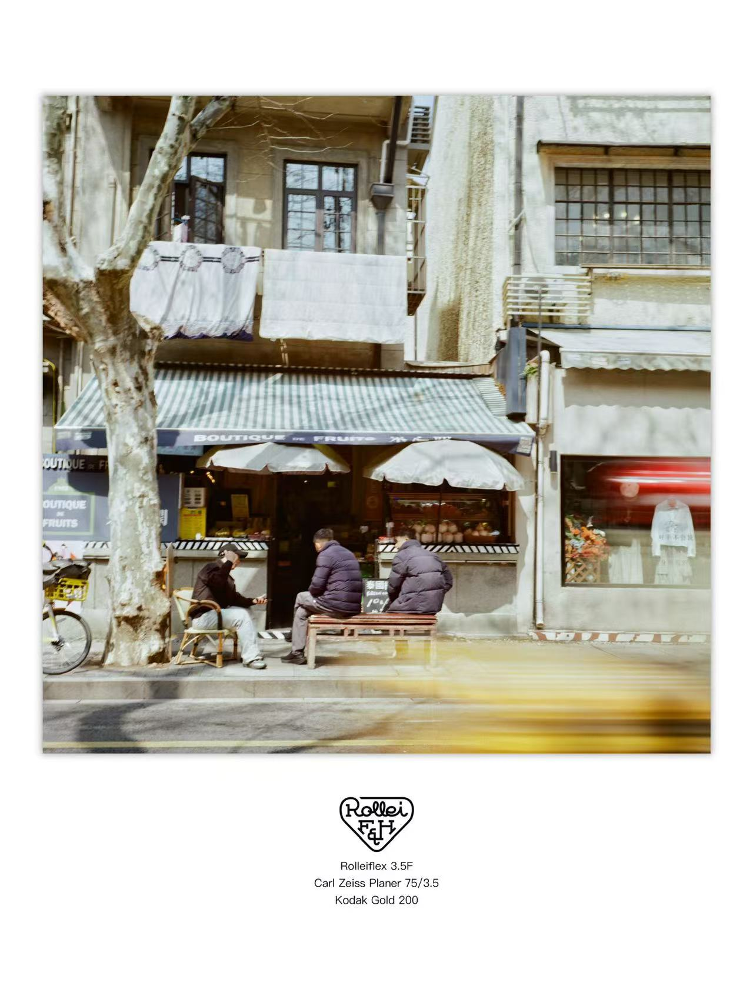

2026年2月/Rolleiflex 3.5F/Kodak gold 200
在思南路扫街，那天只有1个小时，拍完就要去接老婆了，匆匆忙忙的浪射

2024年 携 徕卡M6
拍摄于上海，胶卷是柯达Portra 400。想捕捉弄堂里的烟火气。
拍胶片挺无聊的，这些照片看不下去就关掉吧

在思南路扫街，那天只有1个小时，拍完就要去接老婆了，匆匆忙忙的浪射
拍摄于上海，胶卷是柯达Portra 400。想捕捉弄堂里的烟火气。